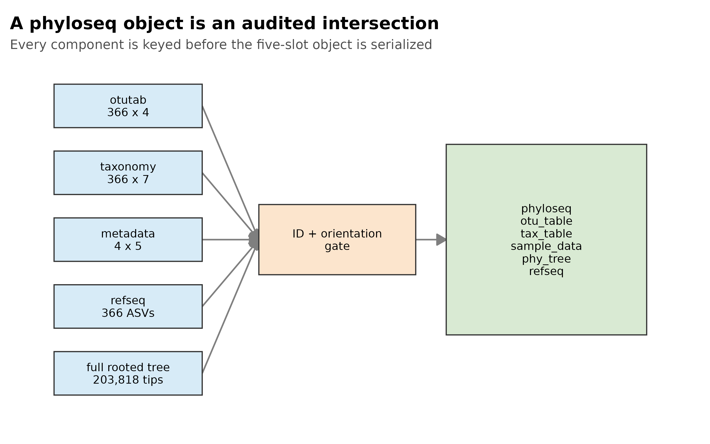
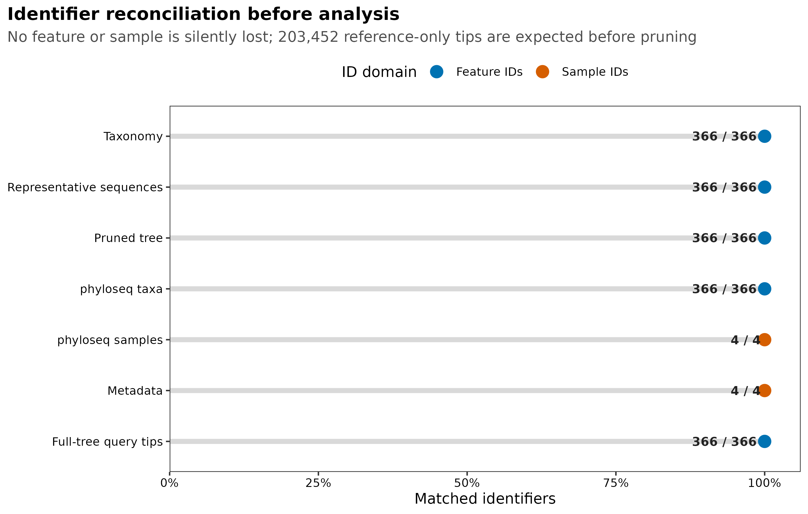
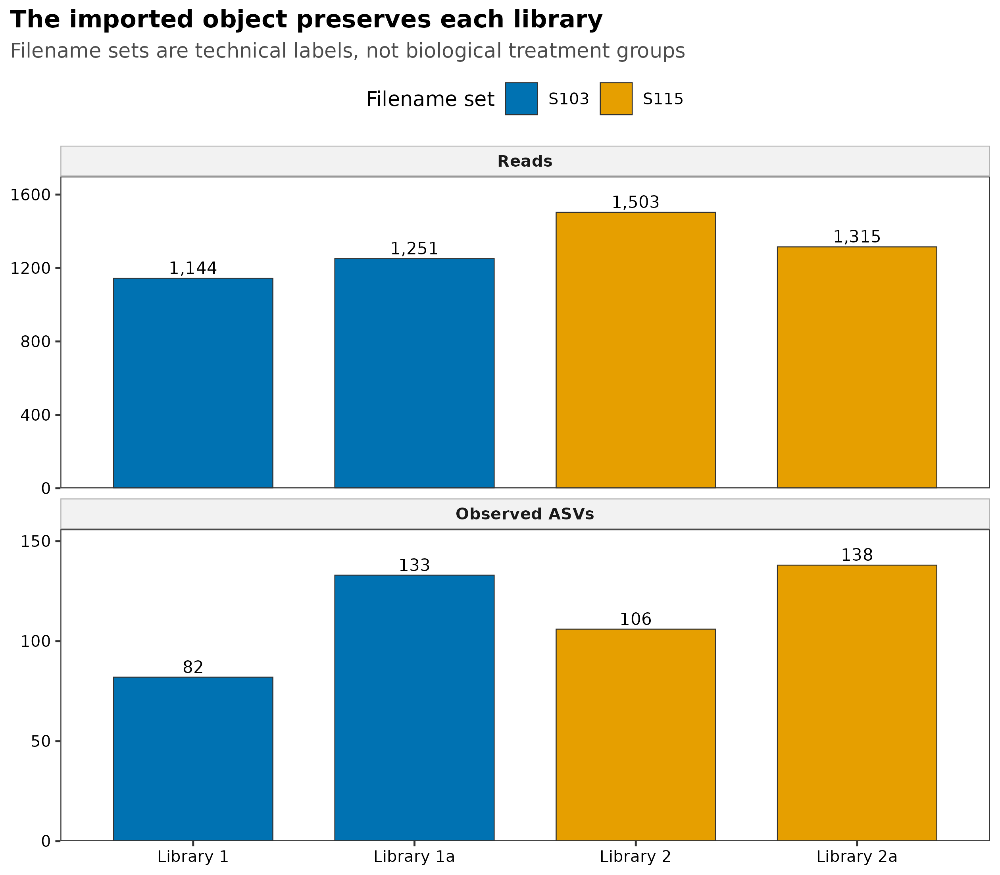
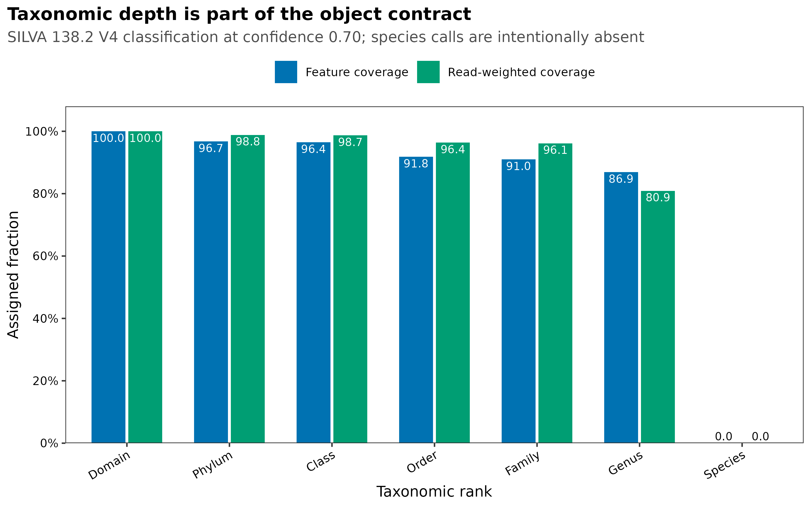

options(timeout = 600)
data_url <- "https://raw.githubusercontent.com/petemeng/microbiome-best-practices/3cb6a817e0c73ab7ecbec1cedc1ad80cbb9ecfaa/"
input_files <- c(
"scripts/validate_phyloseq_import.R",
"data/small/phyloseq-import/metadata.tsv",
"data/small/phyloseq-import/otutab.tsv",
"data/small/phyloseq-import/representative-sequences.fasta.gz",
"data/small/phyloseq-import/rooted-insertion-tree.nwk.gz",
"data/small/phyloseq-import/source-summary.json",
"data/small/phyloseq-import/taxonomy-confidence.tsv",
"data/small/phyloseq-import/taxonomy.tsv"
)
for (path in input_files) {
dir.create(dirname(path), recursive = TRUE, showWarnings = FALSE)
if (!file.exists(path)) download.file(paste0(data_url, path), path, mode = "wb", quiet = TRUE)
}导出到 R：构建 phyloseq 对象、数据结构详解
把 QIIME 2 结果正确装进 phyloseq
把计数表、分类表和样本表装进同一个对象，最容易出错的不是语法，而是无声的取交集。缺少一个 sample ID 可能删除整个样本；缺少高丰度 ASV 的分类记录则可能改变所有剩余菌的相对比例。应先列出各表不匹配的 ID，决定如何处理，再构建对象，不能用构造器自动删掉不匹配项来代替判断。
行列数量相等也不代表对齐正确。需要按 ID 重排，并从对象中反向检查几个样本的计数、总 reads 和分组标签。本例的 366 个 ASV、5,213 条 reads 在转换后全部保留；树中另有 203,452 个参考尖端，它们不是样本中的额外菌。如果自己的部分 ASV 没有树位置，应说明系统发育分析使用的子集，而不是默认从所有不依赖树的分析中一并删除。




重要按 ID 对齐，并核对转换前后的计数
成功执行 phyloseq() 只证明构造器返回了对象，不证明输入方向、ID 交集、计数总量和树尖端都正确。先验收每个组件，再构建对象；构建后再从对象反向核对。
本次冻结输入和对象结果如下：
Source
nf-core/test-datasets commit: f282ad2bafb3ca90190ec87290066ee1985df655
Denoising: QIIME 2 / q2-dada2 2026.4.0
Taxonomy: SILVA 138.2 V4 classifier, confidence 0.70
Tree: rooted SEPP insertion tree
Input contract
Count table: 366 features x 4 libraries
Taxonomy: 366 features x 7 ranks
Metadata: 4 libraries x 5 variables
Representative sequences: 366
Total reads: 5,213
Complete tree: 203,818 tips
Query / reference-only tips: 366 / 203,452
phyloseq object
Components: 5
Component names: otu_table, tax_table, sam_data,
phy_tree, refseq
Orientation: taxa_are_rows = TRUE
Object tree: 366 rooted ASV tips
Features / samples / reads: 366 / 4 / 5,213
Genus assignment: 318 / 4,217 features / reads
Species assignment: 0 / 0 features / reads
RDS round trip: PASS
Required checks: 82 / 82 PASS四个 library labels 来自 nf-core 测试文件名。S103、S115、base 和 suffix_a 描述文件集合，不是处理、病例状态或生物学重复，因此这里只验证数据结构，不做组间推断。
下载并读取本次分析的数据
需要 R，以及 Biostrings、ape、digest、dplyr、ggplot2、phyloseq、readr、tibble、tidyr。本次使用nf-core ampliseq V4 示例的 count、taxonomy、metadata 三张表，以及代表序列和插入树。
在一个新建的文件夹中运行以下代码，下载文件后按文中的顺序继续分析：
set.seed(20260721)
required_packages <- c(
"ape", "Biostrings", "digest", "dplyr", "ggplot2",
"phyloseq", "readr", "scales", "tibble", "tidyr"
)
missing_packages <- required_packages[
!vapply(required_packages, requireNamespace, logical(1), quietly = TRUE)
]
stopifnot(length(missing_packages) == 0L)
pal_pub <- c(
blue = "#0072B2",
orange = "#E69F00",
green = "#009E73",
vermillion = "#D55E00",
purple = "#CC79A7",
sky = "#56B4E9",
yellow = "#F0E442",
grey = "#6B7280"
)
scale_color_pub <- function(..., values = unname(pal_pub)) {
ggplot2::scale_color_manual(..., values = values)
}
scale_fill_pub <- function(..., values = unname(pal_pub)) {
ggplot2::scale_fill_manual(..., values = values)
}
theme_pub <- function(base_size = 11) {
ggplot2::theme_bw(base_size = base_size, base_family = "sans") +
ggplot2::theme(
panel.grid = ggplot2::element_blank(),
axis.text = ggplot2::element_text(color = "black"),
axis.title = ggplot2::element_text(color = "black"),
plot.title.position = "plot",
plot.title = ggplot2::element_text(face = "bold"),
plot.subtitle = ggplot2::element_text(color = "#4D4D4D"),
strip.background = ggplot2::element_rect(
fill = "#F2F2F2", color = "#B3B3B3"
),
strip.text = ggplot2::element_text(face = "bold"),
legend.key = ggplot2::element_blank(),
legend.position = "top"
)
}
save_pub <- function(plot, stem, width = 125, height = 95, dpi = 350) {
dir.create(dirname(stem), recursive = TRUE, showWarnings = FALSE)
ggplot2::ggsave(
paste0(stem, ".pdf"), plot,
width = width, height = height, units = "mm",
device = grDevices::cairo_pdf, bg = "white"
)
ggplot2::ggsave(
paste0(stem, ".png"), plot,
width = width, height = height, units = "mm",
dpi = dpi, bg = "white"
)
ggplot2::ggsave(
paste0(stem, ".tiff"), plot,
width = width, height = height, units = "mm",
dpi = dpi, compression = "lzw", bg = "white"
)
invisible(plot)
}从 QIIME 2 导出标准文件
若手中仍是 Artifact，可在 QIIME 2 环境中导出。输出目录应分别创建，避免同名文件互相覆盖：
mkdir -p export/table export/taxonomy export/sequences export/tree
qiime tools export \
--input-path table.qza \
--output-path export/table
biom convert \
--input-fp export/table/feature-table.biom \
--output-fp export/table/feature-table.tsv \
--to-tsv
qiime tools export \
--input-path taxonomy.qza \
--output-path export/taxonomy
qiime tools export \
--input-path representative-sequences.qza \
--output-path export/sequences
qiime tools export \
--input-path rooted-tree.qza \
--output-path export/treeBIOM 转出的第一行可能是注释，feature ID 列名也可能是 #OTU ID。应把它规范成首列 FeatureID、行是 features、后续列是 samples 的 otutab.tsv。QIIME 2 taxonomy 常是 Feature ID / Taxon / Confidence 三列；下文“换成你自己的数据”给出把 Taxon 拆成七列的完整代码。
本页使用已经规范化并固定哈希的真实文件，来源记录见 source-summary.json。它们不是从某个先前保存的 R 对象读取。
下载完整 R 脚本。脚本包含数据下载、计算和图形导出。
首次使用时安装 R 包
install.packages(c(
"ape", "digest", "dplyr", "ggplot2", "jsonlite", "readr",
"scales", "tibble", "tidyr"
))
if (!requireNamespace("BiocManager", quietly = TRUE)) {
install.packages("BiocManager")
}
BiocManager::install(
c("phyloseq", "Biostrings"),
version = "3.19",
ask = FALSE,
update = FALSE
)phyloseq 如何保持特征、分类和样本一致
导出后重新核对文件格式与 ID
QIIME 2 Artifact（.qza）把数据、semantic type、格式和 provenance 打包在一起；R 中的矩阵、data frame、phylo 和 DNAStringSet 则是分析对象。qiime tools export 会把 Artifact 的数据部分写成标准文件，但导出文件不再携带完整 Artifact provenance。
因此应同时保存两类证据：
| 资产 | 负责回答的问题 |
|---|---|
原始 .qza + qiime tools peek / provenance |
数据从哪里来、用什么参数产生 |
| 导出的 TSV / FASTA / Newick + SHA-256 | R 实际读取了哪一份字节 |
| R 对象审计 | 转换是否保留 feature、sample、reads 和树尖端 |
sessionInfo() / lockfile |
R 与包版本是什么 |
一个可靠的 R 入口不能只写“从 QIIME 2 导入”，还要明确导出的是哪种 semantic type、怎样转换方向，以及如何证明 ID 没有被截断或自动丢弃。
三件套决定主体，序列和树扩展能力
最小的群落对象由三件套组成：
otutab: features x samples
taxonomy: features x taxonomic ranks
metadata: samples x variables它们分别进入：
otu_table <- counts
tax_table <- taxonomy
sample_data <- metadata若再加入代表序列与系统发育树，对象可扩展为五组件：
refseq <- ASV sequences
phy_tree <- rooted ASV tree三组件对象足以进行许多非系统发育分析；Faith’s PD、weighted UniFrac 和 unweighted UniFrac 等指标还需要 ID 对齐、含枝长的 rooted tree。保留 refseq 也便于追踪具体 ASV、重新注释和导出序列。
样本、特征、序列与树必须按 ID 对应
设计数表 feature 集合为 (F_c)，taxonomy 为 (F_t)，代表序列为 (F_s)，树尖端为 (F_p)。进入五组件对象的 ASV 集合应为：
\[ F = F_c \cap F_t \cap F_s \cap F_p \]
sample 集合则是计数表列名与 metadata 行名的交集：
\[ S = S_c \cap S_m \]
真正重要的不是交集能算出来，而是集合差是否符合预期。若 taxonomy 少 20 个 ASV，构造器可能只保留共同部分；对象仍能生成，但 feature 数和 reads 已改变。正式分析应在构造器之前显式计算：
setdiff(count_feature_ids, taxonomy_feature_ids)
setdiff(count_sample_ids, metadata_sample_ids)只有预先定义为允许的差异才能保留。例如完整 SEPP insertion tree 中有 203,452 个 reference-only tips，这些参考尖端不是 feature table 中的 ASV，可以在审计后裁剪；taxonomy 缺失一个 count feature 则不是同一类情况。
用 taxa_are_rows 明确特征位于行还是列
本页计数矩阵是 features × samples，因此必须写：
phyloseq::otu_table(otu_matrix, taxa_are_rows = TRUE)若输入是 samples × features，应先根据 feature ID 与 taxonomy ID 的匹配关系判断方向，再转置矩阵。不要因为“行数比列数多”就猜测方向；小型研究、聚合表或过滤后的数据完全可能打破这种经验。
方向错误有时仍会生成对象，随后产生荒谬的 ntaxa()、nsamples() 或 library size。至少要反查：
number of taxa
number of samples
sample-wise read totals
taxa_are_rows flag完整 reference-placement tree 要先解释、再裁剪
本例的完整 SEPP tree 有 203,818 个 tips：366 个 query ASV 加 203,452 个 reference tips。完整树保留 reference placement 的坐标和来源证据，但 feature table 只有 366 个 ASV。
对象构建前显式执行：
query_tree <- ape::keep.tip(full_tree, feature_ids)并核对裁剪后仍然：
- 有 366 个且仅有 366 个目标 tips；
- rooted；
- branch lengths 无缺失、无负值；
- tip labels 与
otutabfeature IDs 完全集合相等。
显式裁剪比依赖构造器内部求交集更容易审计，也避免把 20 万个 reference-only tips 长期塞进每个下游对象。完整 tree 文件仍应作为来源资产归档。
导入时保留原始整数计数
相对丰度、稀释、CLR 和其他变换服务于不同问题，不应覆盖唯一的原始计数入口。对象中的 otu_table 先保留非负整数 counts：
raw count object
├─ composition display -> relative abundance copy
├─ count model -> raw-count copy + model offsets
├─ phylogenetic diversity -> filtered/rarefied copy
└─ Aitchison analysis -> zero-aware log-ratio copy这样每条分析分支都能追溯到同一个 count ledger。若直接把相对丰度写回主体对象，后续 DESeq2、library size 审计和 reads 加权 taxonomy coverage 都会失去原始含义。
taxonomy 的空值是测量边界
taxonomy table 有七列不等于每条 ASV 都有七级注释。本例中：
| Rank | Assigned ASVs | Assigned reads | Read-weighted coverage |
|---|---|---|---|
| Domain | 366 | 5,213 | 100.0% |
| Phylum | 354 | 5,153 | 98.8% |
| Family | 333 | 5,011 | 96.1% |
| Genus | 318 | 4,217 | 80.9% |
| Species | 0 | 0 | 0.0% |
空字符串、NA、Unassigned 和前缀后没有名称的值，都不能当作已注释。Species 覆盖为 0 时，不能把 Genus 名称复制到 Species 列，也不能以 ASV 序列唯一为由声称物种水平分辨率。
RDS 是经过验证的派生物，不是不可追溯的起点
saveRDS() 适合保存完整 S4 对象，避免每次交互都重新读取并对齐五类文件。但 RDS 应在三件套、序列、树和环境通过检查后生成，并与以下信息一起归档：
- 输入路径与 SHA-256；
- R、Bioconductor 与
phyloseq版本； - feature/sample/read counts；
- 组件名称与方向；
- 构建脚本和验证日志。
只收到一个来历不明的 ps.rds 时，很难证明计数是否已变换、taxonomy 用了哪个数据库、树是否裁剪正确或 metadata 是否被重排。
深入：为什么对象构建前后要检查两次
构建前检查的是输入合同：
IDs unique
sets reconcile
counts integer and non-negative
orientation explicit
tree rooted and branch lengths valid构建后检查的是转换结果：
class and component names
ntaxa / nsamples / total reads
sample_sums
tree tips and refseq names
RDS reload parity两类检查捕捉的问题不同。前者能指出哪个源文件错了；后者能发现构造器求交集、排序或序列化带来的变化。只做后者时，常只能看到“少了多少”，却不知道丢失发生在哪个组件。
按ID对齐三张表、序列与树
同时核对样本、特征与树的对应关系
核对三张表、代表序列和树，并生成对应的四张诊断图。
run_analysis <- function(command, args) {
output <- system2(command, args, stdout = TRUE, stderr = TRUE)
status <- attr(output, "status")
if (!is.null(status) && status != 0L) stop(paste(tail(output, 20), collapse = "\n"))
invisible(output)
}
run_analysis(file.path(R.home("bin"), "Rscript"), c("--vanilla", "scripts/validate_phyloseq_import.R", "--project-root", ".", "--input-dir", "data/small/phyloseq-import", "--output-dir", "results/17-phyloseq-import", "--figure-dir", "figures"))完整计算脚本：validate_phyloseq_import.R。
校验输入文件字节
先固定路径与 SHA-256。只要文件内容改变，代码立即停止：
input_dir <- "data/small/phyloseq-import"
input_paths <- c(
otutab = file.path(input_dir, "otutab.tsv"),
taxonomy = file.path(input_dir, "taxonomy.tsv"),
metadata = file.path(input_dir, "metadata.tsv"),
representative_sequences = file.path(
input_dir, "representative-sequences.fasta.gz"
),
rooted_insertion_tree = file.path(
input_dir, "rooted-insertion-tree.nwk.gz"
)
)
expected_sha256 <- c(
otutab = "6c43bb8f929f935b60e42ed32737632d3be18ddd491f5298ba3a6abd6e3f18a9",
taxonomy = "8ef235ea19923307eef4d8e1905c2f34b78cf25cf1a83f08aa00353f2c5c0d38",
metadata = "6628dd51051c53884e82c540ceaff8cc34f69900a78d372239a2ed41ff5b7263",
representative_sequences = "a19e083cfb0ab757d557569bdf76aa3de78576ae35033a7e69a647976a370bc2",
rooted_insertion_tree = "7e541e2ed9e3f81d9b6c6bf98999335e7f684a37ac5dd5f2b56e61b2f4c4c47c"
)
observed_sha256 <- vapply(
input_paths,
digest::digest,
character(1),
algo = "sha256",
serialize = FALSE,
file = TRUE
)
hash_audit <- tibble::tibble(
asset = names(input_paths),
observed_sha256 = unname(observed_sha256),
expected_sha256 = unname(expected_sha256),
status = ifelse(observed_sha256 == expected_sha256, "PASS", "FAIL")
)
stopifnot(all(hash_audit$status == "PASS"))
hash_audit# A tibble: 5 × 4
asset observed_sha256 expected_sha256 status
<chr> <chr> <chr> <chr>
1 otutab 6c43bb8f929f935b60e42ed327376… 6c43bb8f929f93… PASS
2 taxonomy 8ef235ea19923307eef4d8e1905c2… 8ef235ea199233… PASS
3 metadata 6628dd51051c53884e82c540ceaff… 6628dd51051c53… PASS
4 representative_sequences a19e083cfb0ab757d557569bdf76a… a19e083cfb0ab7… PASS
5 rooted_insertion_tree 7e541e2ed9e3f81d9b6c6bf989993… 7e541e2ed9e3f8… PASS 读取三件套并确认方向
首列作为 key，而不是普通分析变量：
read_keyed_tsv <- function(path) {
x <- readr::read_tsv(
path,
show_col_types = FALSE,
progress = FALSE,
name_repair = "minimal",
na = character()
)
ids <- as.character(x[[1L]])
stopifnot(length(ids) > 0L, !anyDuplicated(ids), !anyNA(ids), nzchar(ids))
out <- as.data.frame(x[-1L], check.names = FALSE)
rownames(out) <- ids
out
}
otutab <- read_keyed_tsv("data/small/phyloseq-import/otutab.tsv")
taxonomy <- read_keyed_tsv("data/small/phyloseq-import/taxonomy.tsv")
metadata <- read_keyed_tsv("data/small/phyloseq-import/metadata.tsv")
otu_matrix <- as.matrix(otutab)
storage.mode(otu_matrix) <- "numeric"
tax_matrix <- as.matrix(taxonomy)
storage.mode(tax_matrix) <- "character"
feature_ids <- rownames(otu_matrix)
sample_ids <- colnames(otu_matrix)
stopifnot(
dim(otu_matrix)[[1L]] == 366L,
dim(otu_matrix)[[2L]] == 4L,
sum(otu_matrix) == 5213,
all(is.finite(otu_matrix)),
all(otu_matrix >= 0),
all(otu_matrix == round(otu_matrix)),
setequal(feature_ids, rownames(tax_matrix)),
setequal(sample_ids, rownames(metadata))
)
list(
otutab_dimension = dim(otu_matrix),
taxonomy_dimension = dim(tax_matrix),
metadata_dimension = dim(metadata),
total_reads = sum(otu_matrix)
)$otutab_dimension
[1] 366 4
$taxonomy_dimension
[1] 366 7
$metadata_dimension
[1] 4 5
$total_reads
[1] 5213看清三张表的结构：
utils::head(
data.frame(FeatureID = rownames(otutab), otutab, check.names = FALSE),
5
)
utils::head(
data.frame(FeatureID = rownames(taxonomy), taxonomy, check.names = FALSE),
5
)
utils::head(
data.frame(SampleID = rownames(metadata), metadata, check.names = FALSE),
4
) FeatureID 1 1a 2
b39be459cc96689db8cd6b00a0d86e8e b39be459cc96689db8cd6b00a0d86e8e 164 0 332
df915ccb4ee135b84e0b244e8af12b92 df915ccb4ee135b84e0b244e8af12b92 0 150 0
5da32e051bdda695c26f4cc556c3aede 5da32e051bdda695c26f4cc556c3aede 65 0 133
3ebe761bfb1238c87195d431f41bf976 3ebe761bfb1238c87195d431f41bf976 90 17 57
b7d6cf3f7467ca45087ca083796a0af0 b7d6cf3f7467ca45087ca083796a0af0 57 0 94
2a
b39be459cc96689db8cd6b00a0d86e8e 0
df915ccb4ee135b84e0b244e8af12b92 140
5da32e051bdda695c26f4cc556c3aede 0
3ebe761bfb1238c87195d431f41bf976 0
b7d6cf3f7467ca45087ca083796a0af0 0
FeatureID Domain
b39be459cc96689db8cd6b00a0d86e8e b39be459cc96689db8cd6b00a0d86e8e Bacteria
df915ccb4ee135b84e0b244e8af12b92 df915ccb4ee135b84e0b244e8af12b92 Archaea
5da32e051bdda695c26f4cc556c3aede 5da32e051bdda695c26f4cc556c3aede Archaea
3ebe761bfb1238c87195d431f41bf976 3ebe761bfb1238c87195d431f41bf976 Bacteria
b7d6cf3f7467ca45087ca083796a0af0 b7d6cf3f7467ca45087ca083796a0af0 Bacteria
Phylum Class
b39be459cc96689db8cd6b00a0d86e8e Pseudomonadota Gammaproteobacteria
df915ccb4ee135b84e0b244e8af12b92 Nanoarchaeota Nanoarchaeia
5da32e051bdda695c26f4cc556c3aede Thermoproteota Nitrososphaeria
3ebe761bfb1238c87195d431f41bf976 Pseudomonadota Gammaproteobacteria
b7d6cf3f7467ca45087ca083796a0af0 Pseudomonadota Gammaproteobacteria
Order Family
b39be459cc96689db8cd6b00a0d86e8e Burkholderiales Gallionellaceae
df915ccb4ee135b84e0b244e8af12b92 Woesearchaeales Incertae_Sedis
5da32e051bdda695c26f4cc556c3aede Nitrosopumilales Nitrosopumilaceae
3ebe761bfb1238c87195d431f41bf976 Pseudomonadales Moraxellaceae
b7d6cf3f7467ca45087ca083796a0af0 Burkholderiales Comamonadaceae
Genus Species
b39be459cc96689db8cd6b00a0d86e8e Unassigned Unassigned
df915ccb4ee135b84e0b244e8af12b92 Incertae_Sedis Unassigned
5da32e051bdda695c26f4cc556c3aede Nitrosarchaeum Unassigned
3ebe761bfb1238c87195d431f41bf976 Acinetobacter Unassigned
b7d6cf3f7467ca45087ca083796a0af0 Polaromonas Unassigned
SampleID LibraryLabel FilenameSet FilenameVariant AmpliconRegion ReadLayout
1 1 Library_1 S103 base 16S_V4 PairedEnd
1a 1a Library_1a S103 suffix_a 16S_V4 PairedEnd
2 2 Library_2 S115 base 16S_V4 PairedEnd
2a 2a Library_2a S115 suffix_a 16S_V4 PairedEnd样本 reads 与 observed ASVs 是最直接的方向回验：
sample_audit <- tibble::tibble(
SampleID = sample_ids,
Library = metadata[sample_ids, "LibraryLabel"],
Reads = as.numeric(colSums(otu_matrix)),
ObservedASVs = as.numeric(colSums(otu_matrix > 0))
)
stopifnot(
identical(sample_audit$Reads, c(1144, 1251, 1503, 1315)),
identical(sample_audit$ObservedASVs, c(82, 133, 106, 138))
)
sample_audit# A tibble: 4 × 4
SampleID Library Reads ObservedASVs
<chr> <chr> <dbl> <dbl>
1 1 Library_1 1144 82
2 1a Library_1a 1251 133
3 2 Library_2 1503 106
4 2a Library_2a 1315 138读取代表序列与完整 rooted tree
先核对 FASTA header，再把完整树明确裁剪到计数表 ASV：
sequences <- Biostrings::readDNAStringSet(
"data/small/phyloseq-import/representative-sequences.fasta.gz"
)
full_tree <- ape::read.tree(
gzfile("data/small/phyloseq-import/rooted-insertion-tree.nwk.gz")
)
full_query_tips <- intersect(full_tree$tip.label, feature_ids)
reference_only_tips <- setdiff(full_tree$tip.label, feature_ids)
stopifnot(
length(sequences) == 366L,
setequal(names(sequences), feature_ids),
ape::Ntip(full_tree) == 203818L,
length(full_query_tips) == 366L,
length(reference_only_tips) == 203452L,
ape::is.rooted(full_tree),
!anyNA(full_tree$edge.length),
all(full_tree$edge.length >= 0)
)
query_tree <- ape::keep.tip(full_tree, feature_ids)
stopifnot(
ape::Ntip(query_tree) == 366L,
setequal(query_tree$tip.label, feature_ids),
ape::is.rooted(query_tree),
!anyNA(query_tree$edge.length),
all(query_tree$edge.length >= 0)
)
tibble::tibble(
Tree = c("Complete SEPP insertion tree", "ASV-pruned object tree"),
Tips = c(ape::Ntip(full_tree), ape::Ntip(query_tree)),
QueryTips = c(length(full_query_tips), ape::Ntip(query_tree)),
ReferenceOnlyTips = c(length(reference_only_tips), 0L),
Rooted = c(ape::is.rooted(full_tree), ape::is.rooted(query_tree))
)# A tibble: 2 × 5
Tree Tips QueryTips ReferenceOnlyTips Rooted
<chr> <int> <int> <int> <lgl>
1 Complete SEPP insertion tree 203818 366 203452 TRUE
2 ASV-pruned object tree 366 366 0 TRUE 构建对象前检查各组件的 ID 是否匹配
对账表应明确区分 feature IDs 与 sample IDs：
id_gate <- tibble::tribble(
~Component, ~Domain, ~Expected, ~Matched, ~Missing, ~Unexpected,
"Taxonomy", "Feature IDs", length(feature_ids),
length(intersect(feature_ids, rownames(taxonomy))),
length(setdiff(feature_ids, rownames(taxonomy))),
length(setdiff(rownames(taxonomy), feature_ids)),
"Representative sequences", "Feature IDs", length(feature_ids),
length(intersect(feature_ids, names(sequences))),
length(setdiff(feature_ids, names(sequences))),
length(setdiff(names(sequences), feature_ids)),
"Pruned tree", "Feature IDs", length(feature_ids),
length(intersect(feature_ids, query_tree$tip.label)),
length(setdiff(feature_ids, query_tree$tip.label)),
length(setdiff(query_tree$tip.label, feature_ids)),
"Metadata", "Sample IDs", length(sample_ids),
length(intersect(sample_ids, rownames(metadata))),
length(setdiff(sample_ids, rownames(metadata))),
length(setdiff(rownames(metadata), sample_ids))
)
stopifnot(
all(id_gate$Matched == id_gate$Expected),
all(id_gate$Missing == 0L),
all(id_gate$Unexpected == 0L)
)
id_gate# A tibble: 4 × 6
Component Domain Expected Matched Missing Unexpected
<chr> <chr> <int> <int> <int> <int>
1 Taxonomy Feature IDs 366 366 0 0
2 Representative sequences Feature IDs 366 366 0 0
3 Pruned tree Feature IDs 366 366 0 0
4 Metadata Sample IDs 4 4 0 0构建五组件 phyloseq 对象
先按计数表顺序重排其他组件，再构建对象：
taxonomy <- taxonomy[feature_ids, , drop = FALSE]
metadata <- metadata[sample_ids, , drop = FALSE]
sequences <- sequences[feature_ids]
ps <- phyloseq::phyloseq(
phyloseq::otu_table(otu_matrix, taxa_are_rows = TRUE),
phyloseq::tax_table(as.matrix(taxonomy)),
phyloseq::sample_data(metadata),
phyloseq::phy_tree(query_tree),
sequences
)
component_names <- methods::slotNames(ps)[
!vapply(
methods::slotNames(ps),
function(slot_name) is.null(methods::slot(ps, slot_name)),
logical(1)
)
]
stopifnot(
inherits(ps, "phyloseq"),
setequal(
component_names,
c("otu_table", "tax_table", "sam_data", "phy_tree", "refseq")
),
phyloseq::taxa_are_rows(ps),
phyloseq::ntaxa(ps) == 366L,
phyloseq::nsamples(ps) == 4L,
sum(phyloseq::sample_sums(ps)) == 5213,
setequal(phyloseq::taxa_names(ps), feature_ids),
setequal(phyloseq::sample_names(ps), sample_ids),
setequal(phyloseq::phy_tree(ps)$tip.label, feature_ids),
setequal(names(phyloseq::refseq(ps)), feature_ids)
)
object_summary <- tibble::tibble(
Metric = c(
"Class", "Components", "Features", "Samples", "Reads",
"Tree tips", "Reference sequences", "Taxa are rows"
),
Value = c(
class(ps)[[1L]],
length(component_names),
phyloseq::ntaxa(ps),
phyloseq::nsamples(ps),
sum(phyloseq::sample_sums(ps)),
ape::Ntip(phyloseq::phy_tree(ps)),
length(phyloseq::refseq(ps)),
phyloseq::taxa_are_rows(ps)
)
)
object_summary# A tibble: 8 × 2
Metric Value
<chr> <chr>
1 Class phyloseq
2 Components 5
3 Features 366
4 Samples 4
5 Reads 5213
6 Tree tips 366
7 Reference sequences 366
8 Taxa are rows TRUE phyloseq 的内部 slot 名为 sam_data，面向读者的 accessor 是 sample_data()。分析代码应优先使用 accessor，而不是直接操作 S4 slot。
反向核对 taxonomy、样本计数和组件
构建后再次从对象取值：
object_taxonomy <- as(
phyloseq::tax_table(ps),
"matrix"
)
taxa_reads <- phyloseq::taxa_sums(ps)
taxonomy_coverage <- do.call(
rbind,
lapply(colnames(object_taxonomy), function(rank_name) {
values <- object_taxonomy[, rank_name]
assigned <- !is.na(values) & nzchar(values) & values != "Unassigned"
data.frame(
Rank = rank_name,
AssignedASVs = sum(assigned),
TotalASVs = length(assigned),
AssignedReads = sum(taxa_reads[assigned]),
TotalReads = sum(taxa_reads),
stringsAsFactors = FALSE
)
})
)
genus_row <- taxonomy_coverage[taxonomy_coverage$Rank == "Genus", ]
species_row <- taxonomy_coverage[taxonomy_coverage$Rank == "Species", ]
stopifnot(
genus_row$AssignedASVs == 318L,
genus_row$AssignedReads == 4217,
species_row$AssignedASVs == 0L,
species_row$AssignedReads == 0
)
taxonomy_coverage
phyloseq::sample_sums(ps)[sample_ids]
phyloseq::rank_names(ps)
phyloseq::sample_variables(ps) Rank AssignedASVs TotalASVs AssignedReads TotalReads
1 Domain 366 366 5213 5213
2 Phylum 354 366 5153 5213
3 Class 353 366 5144 5213
4 Order 336 366 5024 5213
5 Family 333 366 5011 5213
6 Genus 318 366 4217 5213
7 Species 0 366 0 5213
1 1a 2 2a
1144 1251 1503 1315
[1] "Domain" "Phylum" "Class" "Order" "Family" "Genus" "Species"
[1] "LibraryLabel" "FilenameSet" "FilenameVariant" "AmpliconRegion"
[5] "ReadLayout" 保存并回读 RDS
保存之前已完成输入与对象检查。回读后比较 class、组件、维度、reads 和 ID：
rds_path <- "results/17-phyloseq-import/atacama-v4-phyloseq.rds"
dir.create(dirname(rds_path), recursive = TRUE, showWarnings = FALSE)
saveRDS(ps, rds_path, version = 3, compress = "xz")
ps_reloaded <- readRDS(rds_path)
stopifnot(
inherits(ps_reloaded, "phyloseq"),
phyloseq::ntaxa(ps_reloaded) == phyloseq::ntaxa(ps),
phyloseq::nsamples(ps_reloaded) == phyloseq::nsamples(ps),
identical(
as.numeric(phyloseq::sample_sums(ps_reloaded)[sample_ids]),
as.numeric(phyloseq::sample_sums(ps)[sample_ids])
),
setequal(phyloseq::taxa_names(ps_reloaded), phyloseq::taxa_names(ps)),
setequal(phyloseq::sample_names(ps_reloaded), phyloseq::sample_names(ps))
)
tibble::tibble(
Metric = c("Class", "Features", "Samples", "Reads", "Taxa IDs", "Sample IDs"),
Before = c(
class(ps)[[1L]], phyloseq::ntaxa(ps), phyloseq::nsamples(ps),
sum(phyloseq::sample_sums(ps)), length(phyloseq::taxa_names(ps)),
length(phyloseq::sample_names(ps))
),
After = c(
class(ps_reloaded)[[1L]], phyloseq::ntaxa(ps_reloaded),
phyloseq::nsamples(ps_reloaded), sum(phyloseq::sample_sums(ps_reloaded)),
length(phyloseq::taxa_names(ps_reloaded)),
length(phyloseq::sample_names(ps_reloaded))
)
)# A tibble: 6 × 3
Metric Before After
<chr> <chr> <chr>
1 Class phyloseq phyloseq
2 Features 366 366
3 Samples 4 4
4 Reads 5213 5213
5 Taxa IDs 366 366
6 Sample IDs 4 4 发布前的独立校验命令为：
Rscript --vanilla scripts/validate_phyloseq_import.R \
--project-root . \
--input-dir data/small/phyloseq-import \
--output-dir results/17-phyloseq-import \
--figure-dir figures
# Expected terminal line:
# Article 17 validation complete: 82 / 82 PASS该脚本还固定 R 与包版本、七份输入哈希、序列长度、完整树与裁剪树、五个对象组件、逐样本 reads、逐 rank taxonomy 覆盖和 RDS 往返结果。机器可读总表在 results/17-phyloseq-import/validation-checks.tsv。
检查对象构建前后的样本和特征
先检查哪些特征和读数进入了分析
对象入口最值得展示的不是一个 str(ps) 截图，而是能回答以下问题的审计图：
- 哪些输入进入对象；
- ID 是否完整匹配；
- 样本 reads 与 observed ASVs 是否保留；
- taxonomy 覆盖下降发生在哪个层级。
例如从对象计算 taxonomy 覆盖后可重绘为 feature- 与 read-weighted 两种比例：
coverage_long <- taxonomy_coverage |>
dplyr::mutate(
FeatureCoverage = 100 * AssignedASVs / TotalASVs,
ReadCoverage = 100 * AssignedReads / TotalReads
) |>
tidyr::pivot_longer(
c(FeatureCoverage, ReadCoverage),
names_to = "Weighting",
values_to = "Coverage"
) |>
dplyr::mutate(
Weighting = dplyr::recode(
Weighting,
FeatureCoverage = "ASV weighted",
ReadCoverage = "Read weighted"
)
)
p_coverage <- ggplot2::ggplot(
coverage_long,
ggplot2::aes(x = Rank, y = Coverage, color = Weighting, group = Weighting)
) +
ggplot2::geom_line(linewidth = 0.8) +
ggplot2::geom_point(size = 2.6) +
scale_color_pub(values = c("#0072B2", "#D55E00")) +
ggplot2::scale_y_continuous(
limits = c(0, 100),
breaks = seq(0, 100, 20),
labels = function(x) paste0(x, "%")
) +
ggplot2::labs(
x = "Taxonomic rank",
y = "Assigned coverage",
color = NULL,
title = "Taxonomic resolution declines toward lower ranks"
) +
theme_pub()
save_pub(
p_coverage,
"figures/17-taxonomy-coverage-redraw",
width = 125,
height = 90
)图内的 title、axis、legend、sample labels 和 annotation 使用英文；中文解释留在正文。这样可直接进入英文论文，也能减少跨平台字体差异。
图形导出与主张保持一致
本页四张正式图均输出：
PDF vector
PNG 350 dpi
TIFF 350 dpi, LZW compression尺寸应按期刊单栏或双栏物理宽度设置，不要先导出一张超大像素图再在排版软件中任意拉伸。save_pub() 的 width 与 height 单位为 mm，方便直接按期刊规格调整。
提示审计图也要有明确的统计单位
taxonomy coverage 同时给 ASV-weighted 和 read-weighted 结果。前者回答“多少 feature 有名字”，后者回答“这些 feature 覆盖多少观测 reads”。两者差异本身可能提示未注释 feature 主要位于低丰度还是高丰度部分。
常见坑
注意审稿人和合作者最容易追问的 12 个问题
- 从来历不明的
ps.rds开始：无法回查原始 counts、taxonomy release、metadata 对齐和 tree 处理。保留标准输入、哈希和构建脚本。
- 把 BIOM 方向读反：必须用 taxonomy feature IDs 和 metadata sample IDs 判断方向，并核对
taxa_are_rows。
- 让构造器静默求交集：先算
setdiff()，报告每个组件缺失与额外 ID，再构建对象。
- 把完整 SEPP reference tips 当样本 ASV：完整树可归档，但对象树要显式裁剪到 feature table；本例从 203,818 tips 裁到 366。
- 只看
ntaxa()，不看 reads：丢一个高丰度 ASV 可能只减少 1 个 feature，却改变大量 reads。feature 与 read retention 都要报告。
- 导入时覆盖原始 counts：relative abundance、rarefaction 与 CLR 分别在对象副本上完成，不要覆盖 count ledger。
- metadata 行名被自动改写：
check.names = FALSE，把首列显式设为 row names，并检查重复、空值和集合相等。
- taxonomy 一列字符串直接塞进
tax_table：先拆成固定 rank 列、去前缀、保留真正未注释值，再验收列名。
- 把空 Species 补成 Genus：这制造了不存在的物种分辨率。本例 Species 为 0/366 ASV。
- 树有 tip labels 却没有可靠 branch lengths/root：系统发育指标还需要 rootedness、完整且非负的枝长。
- 把技术文件名当分组：本例四个 labels 不能支持任何处理效应、病例对照或重复测量推断。
- RDS 保存后不回读：至少在全新 R session 中
readRDS()，比较 class、组件、features、samples、reads 和 ID。
警告对象中有变量，不等于研究设计支持该变量
sample_data() 只是存储 metadata。一个列名能被 plot_ordination(..., color = ...) 使用，并不证明该变量有足够重复、与 batch 可分离或适合置换检验。统计设计仍要独立验收。
警告不要把 phyloseq 自动修剪当作数据清洗策略
自动保留共同 taxa 可以让代码继续运行，却会掩盖拼写差异、截断的 FASTA header、taxonomy 缺行或 tree tip 命名错误。只有已经解释并记录的 reference-only tips 才能在明确规则下裁剪。
报告phyloseq对象构建的方法与限制
下面模板可直接替换方括号内容：
QIIME 2
FeatureTable[Frequency],FeatureData[Taxonomy], representative-sequence, and rooted-phylogeny Artifacts were exported using QIIME 2 version [2026.4.0]. The BIOM feature table was converted to a tab-delimited feature-by-sample count matrix without normalization. Taxonomy strings were parsed into seven ranks, and sample identifiers were reconciled between the count matrix and metadata before object construction. Representative-sequence identifiers and query tips in the complete SEPP insertion tree were matched to feature-table identifiers; the complete [203,818]-tip insertion tree was then explicitly pruned to the [366] observed ASV tips usingapeversion [5.8]. A five-componentphyloseqobject was constructed in R version [4.4.1] usingphyloseqversion [1.48.0], comprising the raw-countotu_table(taxa_are_rows = TRUE),tax_table,sample_data, rootedphy_tree, andrefseq. Input files were verified by SHA-256 checksums. Feature counts, sample counts, total reads, identifier sets, tree branch lengths, and per-sample library sizes were checked before and after construction and after RDS serialization. The final object contained [366] ASVs across [4] technical libraries and [5,213] reads. The library labels represented source filenames and were not treated as biological groups. Random procedures used a fixed seed of [20260721].
若没有 tree 或 representative sequences，应删除对应组件和句子；不能把三组件对象写成完成了系统发育分析。若正文分析使用了过滤、稀释、相对丰度或 log-ratio 变换，还要在相应 Methods 段落另行说明，不能用“构建了 phyloseq 对象”代替预处理细节。
将phyloseq对象构建用于自己的研究
准备三件套和可选的两个组件
| 文件 | 必需性 | 合同 |
|---|---|---|
otutab.tsv |
必需 | 首列 feature ID；其余列是 sample；非负整数 counts |
taxonomy.tsv |
必需 | 首列同一 feature ID；其余列为固定 taxonomy ranks |
metadata.tsv |
必需 | 首列 sample ID；其余列为实验与协变量 |
| representative FASTA | 推荐 | 每个 count feature 一条同名序列 |
| rooted Newick tree | 系统发育分析必需 | 包含目标 feature tips；枝长完整且非负 |
只需要替换路径：
otutab_path <- "data/otutab.tsv"
taxonomy_path <- "data/taxonomy.tsv"
metadata_path <- "data/metadata.tsv"
sequence_path <- "data/representative-sequences.fasta.gz"
tree_path <- "data/rooted-tree.nwk.gz"然后保留本文的 read_keyed_tsv()、方向检查、集合对账、对象反查和 RDS 回验。不要删除检查里的 expected 值后直接运行；应把 366、4、5,213 等示例数字替换成自己在冻结输入后签字确认的数值。
taxonomy 只有一个 Taxon 字符串时完整拆列
QIIME 2 常导出 Feature ID、Taxon、Confidence。下面代码把分号分隔字符串转成七列，并保留 confidence 供敏感性检查：
taxonomy_qiime <- readr::read_tsv(
"export/taxonomy/taxonomy.tsv",
show_col_types = FALSE,
name_repair = "minimal"
) |>
dplyr::rename(
FeatureID = `Feature ID`,
TaxonomyString = Taxon
) |>
tidyr::separate_wider_delim(
TaxonomyString,
delim = ";",
names = c("Domain", "Phylum", "Class", "Order", "Family", "Genus", "Species"),
too_few = "align_start",
too_many = "merge"
) |>
dplyr::mutate(
dplyr::across(
c(Domain, Phylum, Class, Order, Family, Genus, Species),
function(x) {
x <- trimws(x)
x <- sub("^[dpkcofgs]__", "", x)
x[x == ""] <- NA_character_
x
}
)
)
readr::write_tsv(
dplyr::select(
taxonomy_qiime,
FeatureID, Domain, Phylum, Class, Order, Family, Genus, Species
),
"data/taxonomy.tsv",
na = ""
)
readr::write_tsv(
dplyr::select(taxonomy_qiime, FeatureID, Confidence),
"data/taxonomy-confidence.tsv",
na = ""
)不同数据库可能使用 D_0__、Kingdom 或更多/更少 ranks。先根据数据库合同建立明确 crosswalk，再改列名；不要只按字符串位置猜。
用 ID 判断计数表是否需要转置
otu_raw <- read_keyed_tsv(otutab_path)
tax_raw <- read_keyed_tsv(taxonomy_path)
meta_raw <- read_keyed_tsv(metadata_path)
otu_candidate <- as.matrix(otu_raw)
if (
setequal(rownames(otu_candidate), rownames(tax_raw)) &&
setequal(colnames(otu_candidate), rownames(meta_raw))
) {
otu_matrix <- otu_candidate
} else if (
setequal(colnames(otu_candidate), rownames(tax_raw)) &&
setequal(rownames(otu_candidate), rownames(meta_raw))
) {
otu_matrix <- t(otu_candidate)
} else {
stop("Count-table orientation cannot be reconciled with taxonomy and metadata IDs.")
}
storage.mode(otu_matrix) <- "numeric"
stopifnot(
all(is.finite(otu_matrix)),
all(otu_matrix >= 0),
all(otu_matrix == round(otu_matrix))
)没有 tree 或序列时构建三组件对象
ps_three <- phyloseq::phyloseq(
phyloseq::otu_table(otu_matrix, taxa_are_rows = TRUE),
phyloseq::tax_table(as.matrix(tax_raw[rownames(otu_matrix), , drop = FALSE])),
phyloseq::sample_data(meta_raw[colnames(otu_matrix), , drop = FALSE])
)此时 Bray–Curtis、Jaccard、Aitchison、组成展示和许多差异丰度方法仍可开展；Faith’s PD 与 UniFrac 不可用。若后来补入 tree，必须重新做 feature-tip 对账和对象 reads retention，而不是直接把任意 Newick 文件塞进对象。
开始下游分析前完成输入检查
- counts 是未归一化的非负整数，方向由 ID 证明；
- taxonomy feature IDs 与 count features 完全一致，未注释层级保持缺失；
- metadata sample IDs 与 count columns 完全一致，变量含义和单位有数据字典；
- representative FASTA headers 与 count features 完全一致；
- tree 已 root，枝长完整、非负，进入对象的 tips 与 count features 完全一致；
ntaxa()、nsamples()、sample_sums()、taxa_names()和sample_names()与输入账本一致；- RDS 在全新 session 回读后仍通过同一组检查；
- 输入哈希、包版本、构建脚本和验证日志已经归档。
完成这些检查后，再复制对象创建分支用于过滤、归一化和统计模型。原始 count 对象保留为只读基线。
参考
- McMurdie PJ, Holmes S. phyloseq: an R package for reproducible interactive analysis and graphics of microbiome census data. PLoS ONE. 2013;8:e61217. doi:10.1371/journal.pone.0061217
- QIIME 2. Exporting data from QIIME 2 Artifacts. https://docs.qiime2.org/2024.10/tutorials/exporting/
- Bioconductor. phyloseq package and vignettes. https://bioconductor.org/packages/phyloseq/
- Paradis E, Schliep K. ape 5.0: an environment for modern phylogenetics and evolutionary analyses in R. Bioinformatics. 2019;35:526–528. doi:10.1093/bioinformatics/bty633
- Pagès H, Aboyoun P, Gentleman R, DebRoy S. Biostrings: efficient manipulation of biological strings. Bioconductor package. https://bioconductor.org/packages/Biostrings/
- Bolyen E, Rideout JR, Dillon MR, et al. Reproducible, interactive, scalable and extensible microbiome data science using QIIME 2. Nature Biotechnology. 2019;37:852–857. doi:10.1038/s41587-019-0209-9
- nf-core/test-datasets, ampliseq V4 test data, commit
f282ad2bafb3ca90190ec87290066ee1985df655(MIT). https://github.com/nf-core/test-datasets/tree/f282ad2bafb3ca90190ec87290066ee1985df655/testdata